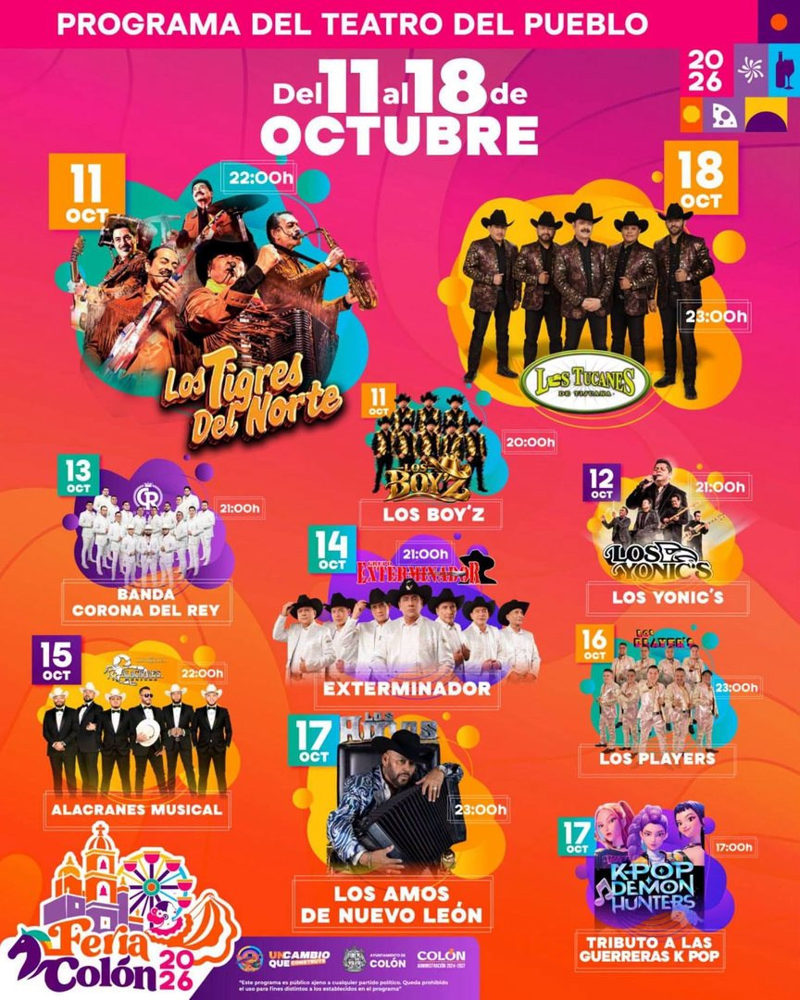
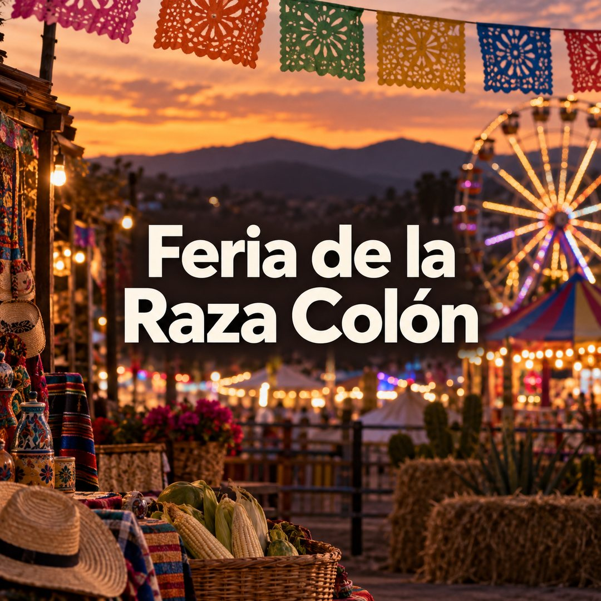

🎪 Feria de la Raza
Colón 2026
Del 11 al 18 de octubre · Colón, Querétaro

🛡️ Nuestro evento: Taller "Seguridad digital" — lunes 12 de octubre, 4:00 pm, Foro Alterno. Antes: conferencia "Protege tu vida digital" (3:00 pm). Conoce el taller completo
ℹ️ Origen de los datos: programa del organizador y póster oficial del Teatro del Pueblo (registrado el 7 de octubre). Puede haber ajustes: horarios y fechas se actualizan aquí hasta el día del evento.
🎪 Cartel de la feria

Del 11 al 18 de octubre · conciertos, charreadas, exposiciones, gastronomía y el Taller de Seguridad Digital (12 de octubre, Foro Alterno).
¿Qué buscas?
🗓️ Programa y cartelera
Los 72 eventos por día: charreadas, derbies, talleres, concursos y los 10 conciertos estelares del Teatro del Pueblo.
Ver el programa🕒 Horarios por día
Aperturas, cierres y cómo moverte entre sedes: auditorio, Foro Alterno, palenque, lienzo charro y más.
Ver horarios🗺️ Mapa de sedes
Teatro del Pueblo, Foro Alterno, palenque, unidad deportiva y los puntos de servicio.
Ver el mapa🛍️ Cartelera artística
Los 10 actos del Teatro del Pueblo: Los Tigres del Norte, Los Tucanes de Tijuana, Los Yonic's…
Ver la cartelera